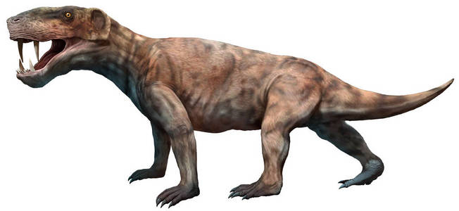

Well Come to Ancient Time
The purpose of this website is to allow you to have some basic understanding of ancient era that earth, this planet we live in, had experienced.
Paleozoic Era
- 542 million years - 485 million years ago
- Cambrian Period
- 480 million years - 440 million years ago
- Ordovician Period
- 440 million years - 419 million years ago
- Silurian Period
- 419 million years - 358 million years ago
- Devonian Period
- 355 million years - 295 million years ago
- Carboniferous Period
- 355 million years - 295 million years ago
- Permian Period
Cambrian Period
Cambrian period is the first period of Phanerozoic Eon, starting from this era higher animal, which has more complex body structure than algae, starting to appear on earth, such as Arthropoda, Bivalvia and Cephalopoda.

(Image of Cephalopoda)
(Image of trilobita)
In this period, triploblastica first appeared. This means creatures is able to grow out things like bone, muscle and etc, this allow creatures to evolute out shall, foot, pliers and etc.
(Image of anomalocaris)
anomalocaris is a representative type of creature that born in cambrian period, it one of the ancestors of the Arthropoda
Ordovician period
Ordovician period start with the separate and movement of earth's plates, this create epicontinental sea increase the living space for the creatures, it also cause mineral store in to land fall into sea, provide more nutrition for the creatures to grow.
World map during cambria
World map during ordovician
In this period, the separated land also create different living area, so there is a great increase of variety of creatures
Different kind of evolution of plectronoceras in ordovician:
(Image of Cameroceras)
Cameroceras is an evolution of Cephalopoda, it can grow up to 9 meter length, it is a top predator of its living region.
(Image of Ascocerida)
Ascocerida is an evolution of Cephalopoda.
(Image of Tarphycerida)
Tarphycerida is an evolution of Cephalopoda.
Ordovician end with a mass extinction, one of the possible reason of this mass extinction is the gamma-ray burst from space, damage the ozonosphere of earth, cause the UV ray from sun kill most of the plankton in water, at the same time it also create particles that block the sunlight cause the temperature drop.
Silurian period
Silurian period has a few important things happened, first due to evolution and the grow in population of arthropods, some arthropods slowly move their living area from sea to land, like arachnids. Second, in this period, fishes evolved jaws, this means the bite force of fish increase greatly, fish starting to become the new predator in water.
fishes in silurian
Devonian period
Devonian period also call a era of fish, fish make use of their jaws, sharp teeth and the ability to swim, they became new predator in water. This is because most of the predator in the past few period can only clinging to the bottom of the water, so the fish can easily attack from their top.
(fishes under the water)
The fish on the drawing is call dunkleosteus one of the top predator in devonian under the water, the prey call Eurypterida which is the top predator in devonian period.
In this period, the body size and population of fish had greatly increased, but be cause of that, the ecological niche in water had became saturated, so the lobe-finned fish had slow move to land.
(Fish move to land)
Devonian period, also end with a mass extinction. The mass extinction start with the grow in plant's population, because in devonian period, there is lack of creature that will eat plants, so the concentration of CO2 decrease, cause the temperature to drop. At the same time, the algae in water is also increased, these algae dead in water will be decompose in to toxic gas, poison the sea creatures.
Carboniferous period
In this period, plant further evoluted wooden structure, tree first time came to this world.
(trees in carboniferous)
Due the evolution of plant, earth's oxygen concentration reach 35%, this allow the arthropods that move to land in Silurian period to grow into extremely big body size. also in this period, the arthropods had evoluted into similar insects etc.
(bugs in carboniferous)
In this period, the quadrupeds that evoluted from lobe-finned fish is able to live on land already. Also the quadrupeds had evoluted into newts like creatures.
(quadrupeds in carboniferous)
The quadrupeds is call Diplocaulus, one of the possible ancestor of the mammals
Permian Period
In this period, chordates evolved amniotic membranes, which freed them from dependence on water sources for reproduction, allowing them to lay eggs and reproduce on dry land.
(amniotic membrane)
This led to the demise of terrestrial giant arthropods such as insects, as in the past the arthropods can stay away from water source to avoid the great chordates predator. But as chordates evolved amniotic membranes and start to move to the dry land, the arthropods had no where to hide. So the arthropods to to evolve to small body size and mimicry to survive.
In this period, chordates evolved into two branch, reptilia which will evolved into dinosaur in the future, another branch is mammalia which evolved into mammals
(artwork of reptilia)
(artwork of mammalia)
Permian period, end with a mass extinction. It cause by volcano eruption, a huge amount of SO2 been emission to the atmosphere, this cause a long period of acid rain, which kill 95% species. In this mass extinction, only a few type of small size mammalia survive, their original ecological niche taken by reptilia and the dinosaur era is going to come.
Evolution of human
Yunnanozoon:
Yunnanozoon was found in Cambrian period, yunnanozoon is one of the oldest vertebrate in the world.
(image of yunnanozoon)
Agnatha:
Agnatha was found in Ordovician period, the creatures like yunnanozoon had evolve into fish-like structure, but it is different from the fish that we known.
(image of agnatha)
Entelognathus Primordialis:
Entelognathus Primordialis was found in the end of Silurian period and Devonian period, the lobe-finned fish evolved jaws and some fish try to move to land for more survive resources.
(image of entelognathus primordialis)
Lepospondyli:
Lepospondyli was found in carboniferous period at this period, the lobe-finned fish evolved into land animal and the ancestors of mammals.
(image of lepospondyli)
Megazostrodon:
Megazostrodon was found in triassic period, after the mass extinction happened in permian and the evolve of dinosaur, the mammals evolved into small body size to survive through the period.
(image of megazostrodon)
Plesiadapis:
Plesiadapis is one of the oldest primates animal, the world is cover with forest after the Cretaceous extinction, so the megazostrodon evolved to able to live on trees.
(image of plesiadapis)
Australopithecus:
Australopithecus is evolved plesiadapis, due to climate change, the forest on earth start to decrease the plesiadapis have to come down from trees and survive on land, that cause the evolution from plesiadapis to Australopithecus.
(image of australopithecus)
Homo erectus:
Homo erectus is the further evolved of australopithecus, as the brain capacity increase, homo erectus start to gain intelligence, so homo erectus learned how to craft and use tool to help with their survive.
(image of homo erectus)
Homo Sapiens:
Homo Sapiens is the further evolved of Homo erectus, the brain capacity further increase and this is our modern human.
(image of homo sapiens)
Intro:
-
Period:
-
Creature:
-
Progress:
-